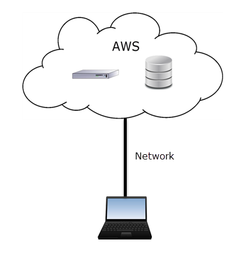

데이터를 AWS로!
Oracle-RDS Migration
Created by Jongwon
AWS?
Amazon Web Services
클라우드 컴퓨팅의 대표 주자
concept

네트워크만 있으면 어디서나 접속!
인스턴스 생성 및 연결
블로그에 정리해 봤습니다!
connection problem
RDS 인스턴스가 설치되어있는 운영체제로는
접근할 수 없습니다.
Point of View
Database Link의 External Directory를 통해 이동합니다.
Data Pump Strategy
- 원본 데이터베이스의 사용자에게 권한 부여
- DBMS_DATAPUMP를 사용하여 덤프파일 생성
- 대상 DB 인스턴스의 Database Link 생성
- DBMS_FILE_TRANSFER로 내보낸 덤프파일을
RDS 인스턴스로 복사
- 대상 인스턴스에 필요한 테이블 공간 생성
- 덤프파일을 RDS 인스턴스의 데이터베이스로 가져오기
- 뒤처리하기
prerequisite
- DBMS_FILE_TRANSFER 패키지에 대한 실행 권한이
있어야 합니다.
- 대상 DB 인스턴스가 버전 11.2.0.2.v6 이상이어야 합니다.
- 원본 DB 인스턴스의 DATA_PUMP_DIR 디렉터리에 대한
쓰기 권한이 있어야 합니다.
- 원본 인스턴스 및 대상 DB 인스턴스에 덤프 파일을
저장할 수 있는 충분한 스토리지 공간이 있는지
확인해야 합니다.
summary
- 원본 데이터베이스의 사용자에게 권한 부여
- DBMS_DATAPUMP를 사용하여 덤프파일 생성
- 대상 DB 인스턴스의 Database Link 생성
- DBMS_FILE_TRANSFER로 내보낸 덤프파일을
RDS 인스턴스로 복사
- 대상 인스턴스에 필요한 테이블 공간 생성
- 덤프파일을 RDS 인스턴스의 데이터베이스로 가져오기
- 뒤처리하기